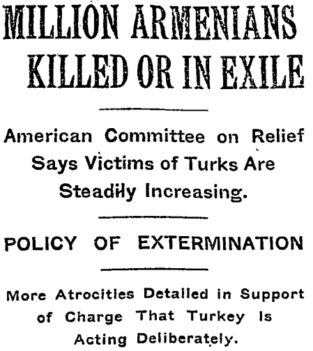
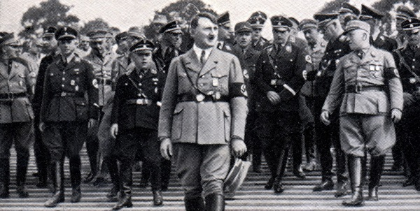
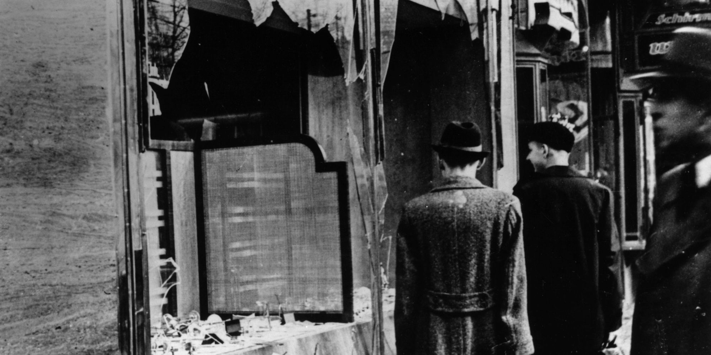
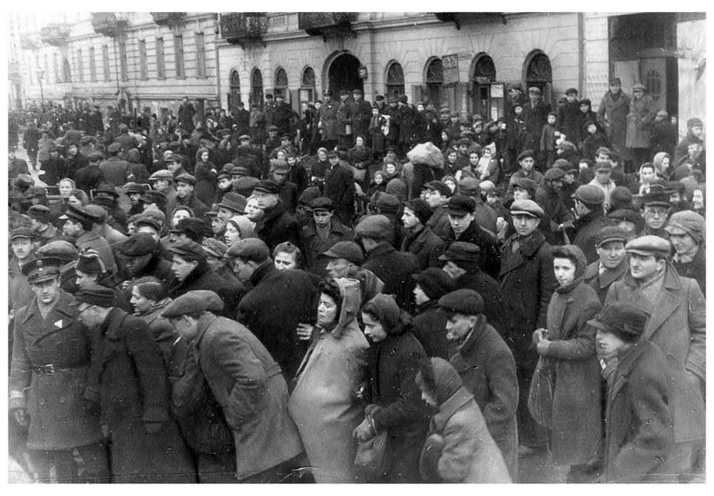
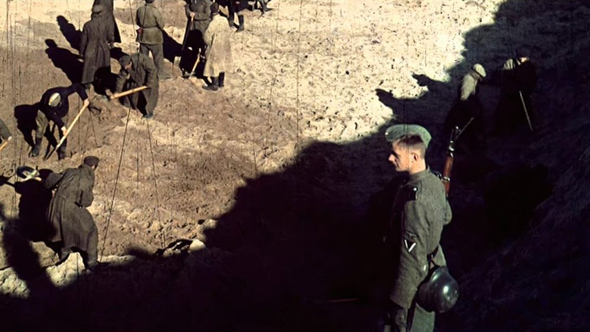
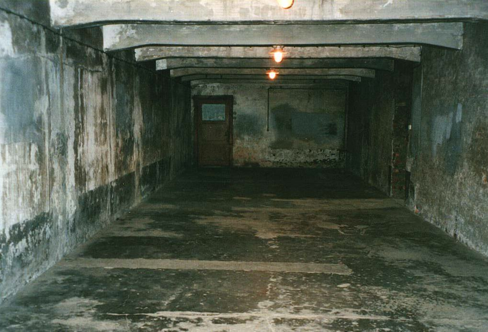
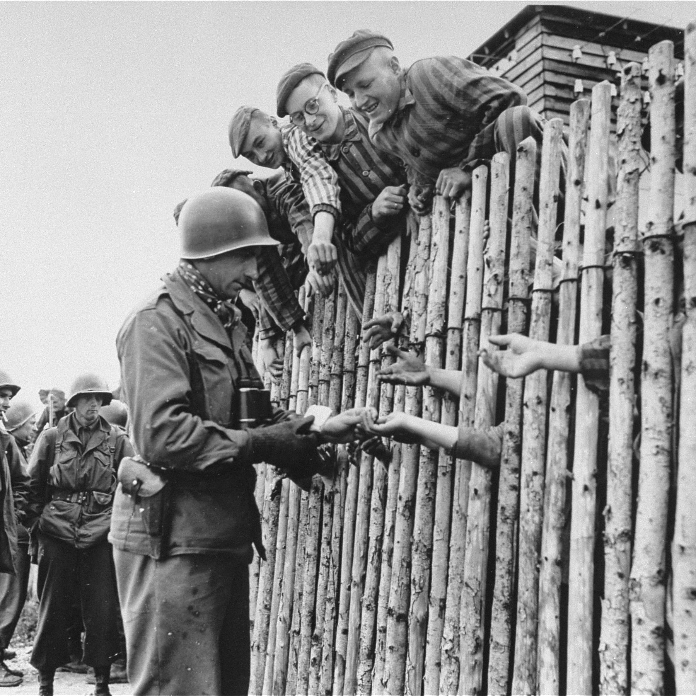

Years before leading up to the holocaust, Jewish communities within Europe
faced countless challenges, ranging from economic and
social marginalination
to prosecution. Despite these, many Jews and their families were able to cultivate
rich and fulfilling lives, tracing back its roots in their cultural tradition and
religious beliefs. Jewish communities thrived and contributed to the society that
they belong to . However, the rise of facism that fueled anti-semitism against them
led to one of the darkest periods in human history. By exploring the experiences of
Jewish communities in the years leading up to the Holocaust, we can gain a deeper
understanding of the historical forces that led to this tragedy and the lessons
we can learn from it today.
TERMINOLOGY
Before we proceed to the events, let us discuss where the term
Holocaust comes from. The term comes from the Greek term holókaustos, which means “burnt
offering" or “whole burnt sacrifice.”

Armenian Massacre
That term was used first in The New York Times in 1965 to describe
the massacre of the Armenian Christians by the Ottoman Empire.
In the Jewish community, the term Shoah, which means “calamity” or
“disaster”, has been used to refer to the genocide.
This term was first used to describe the events in Germany by Yehuda
Erez, and later by Davar and Haaretz in September 1939.
The American Hebrew used the "before the Holocaust" in 1941 to
describe the situation in France, and the New York Times referred to
"hundreds of thousands of European Jews still surviving the Nazi
Holocaust" in 1943.
However, it wasn't until the NBC mini-series "Holocaust" aired in
1978 that the term gained widespread use in the United States.
Clip from NBC Miniseries Holocaust
The Holocaust is commonly defined as the genocide of the European
Jews by Nazi Germany and its collaborators between 1941 and 1945.
However, some historians prefer a definition that includes other
groups targeted by the Nazis.
According to Donald Niewyk and Francis Nicosia, in The Columbia
Guide to the Holocaust, the Holocaust should be defined as "the
systematic, state-sponsored murder of entire groups determined by
heredity." This definition includes not only Jews, but also Roma and
disabled people.
Other groups targeted by the Nazis after Hitler became Chancellor of
Germany in 1933 include those whom they viewed as inherently
inferior, such as some Slavic people, particularly Poles and
Russians, the Roma, and the disabled.
Also, the Nazis targeted those with certain beliefs or
behaviors, such as Jehovah's Witnesses, communists, and homosexuals.
The persecution of these groups was less uniform than that of the
Jews.
For example, the Nazis' treatment of the Slavs consisted of
"enslavement and gradual attrition", while some Slavs were favored.
On the other hand, Hitler regarded the Jews as "a Gegenrasse: a
'counter-race' ... not really human at all", according to historian
Dan Stone.
DURING THE HOLOCAUST
In this
blog, we will divide the
Holocaust into several key events and explore what happened during
each.
Hitler's Rise to Power

Hitler becomes the chancellorThe Nazi Party, led by
Adolf Hitler, came to power in Germany in
1933.
Hitler used propaganda to spread anti-Semitic beliefs, blaming
Jewish people
for Germany's economic troubles and societal issues. The Nuremberg
Laws were passed in 1935,
stripping Jewish people of their citizenship and rights. This set
the stage for the brutal events
that would occur during the Holocaust.
Kristallnacht

Night of Broken Glass
On November 9th, 1938, the Nazis organized a coordinated attack on
Jewish businesses, homes, and synagogues across Germany. This event,
known as Kristallnacht or the "Night of Broken Glass," resulted in
the destruction of thousands of Jewish properties, the arrest of
tens of thousands of Jewish individuals, and the murder of over 90
people.
Ghettos

Warsaw Ghetto, the largest ghetto during the Holocaust
Beginning in 1939, Jewish people were forcibly relocated into
ghettos throughout Eastern Europe. Ghettos
were often overcrowded
and lacked basic resources, resulting in the spread of disease and
starvation. Many people died as a result of these conditions.
Einsatzgruppen

Einsatzgruppen overseeing Jews
In 1941, the Einsatzgruppen, or mobile killing squads, were formed
to carry out mass executions of Jewish people. These squads would
move from town to town, rounding up Jewish residents and shooting
them en masse. It is estimated that the Einsatzgruppen killed over 1
million Jewish people.
Concentration Camps
Auschwitz-Birkenau, the largest concentration camp during the HolocaustConcentration
camps were established throughout Europe to imprison
and kill Jewish people and other minorities. Prisoners were
subjected to forced labor, medical experiments, and torture. The
largest concentration camp was Auschwitz-Birkenau,, where over 1 million
people were killed.
Final Solution

A gas chamber is an apparatus for killing humans or other animals with gas, consisting of a
sealed chamber into which a poisonous or asphyxiant gas is introduced.In 1942, the Nazi regime implemented the "Final
Solution," a plan to
systematically exterminate all Jewish people in Europe. This
involved transporting millions of Jewish people to concentration
camps, ghettos, and killing centers. Gas chambers were used to kill
large numbers of people at once, and it is estimated that between
2.7 and 3 million Jewish people were killed in these chambers.
LIBERATION
The liberation of the concentration camps marked the end of the Holocaust
and the beginning of a long process of recovery and healing for the survivors.
The liberation began in the spring of 1945, as Allied forces
advanced across Europe
and began to free the prisoners in the camps.

Newly liberated prisoners behind a stockade
When the soldiers arrived at the camps, they were often confronted with scenes
of unimaginable horror. Many prisoners were emaciated and suffering from disease
and malnutrition. The bodies of those who had died from starvation, disease, or
murder were often piled up in mass graves or crematoria.
Survivors of the camps
were often traumatized and in shock, having endured years of unimaginable suffering
and loss.
Despite the horrors they had witnessed, the liberating soldiers did their best to
provide care and assistance to the survivors. Medical personnel treated the sick
and wounded, while others distributed food and water to the starving prisoners.
Many soldiers were shocked and deeply affected by what they saw, and some struggled
to come to terms with the atrocities they had witnessed.
In the months following the liberation, the process of
identifying and caring for
the survivors began.
Holocaust Survivors' First Moments of Liberation The International
Red Cross and other humanitarian organizations
played a key role in this effort, providing medical care, food, and shelter to those
who had been liberated.
However, the process of recovery was not easy. Many survivors had lost their
families, homes, and communities, and struggled to rebuild their lives.
In addition, many faced discrimination and persecution in the years that followed,
as they attempted to rebuild their lives in a world that had been forever changed by
the Holocaust.